Bottom line
I was not shipping design worse because I lacked taste. I was shipping it worse because the work had no owner with a method.
The drift
A real audio engine, wearing a generic and drifting face.
ambient-noise started in Feb 2026 as a PM-doc-first project, and it grew a genuine Web Audio engine: white/pink/brown noise, a configurable EQ, cut filters. The engine was real. The interface was a moving target, and the git log says why:
2026-02-21 ui bumps2026-02-22 uiux bump2026-02-23 ui bump2026-02-24 ui bump2026-02-24 bug fix·2026-02-26 fix: stub audio engine to unblock dev client build
That pattern ran for five months and ~43 commits: a surface changed by small degrees and never settled, because every change was a nudge with no direction behind it.
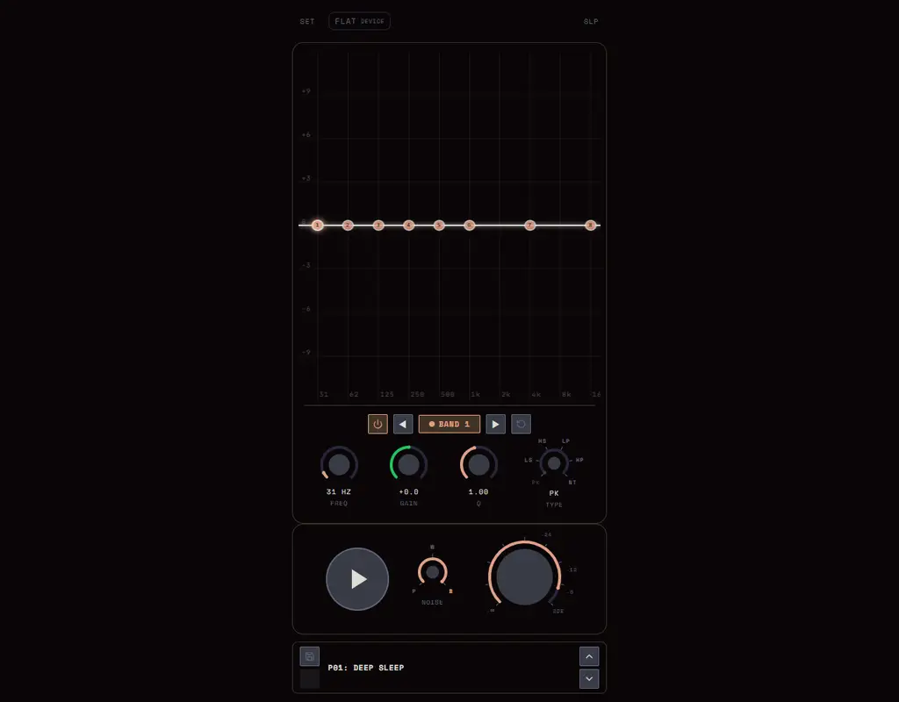
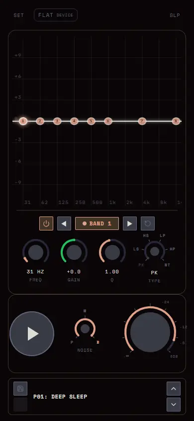
This is what shipped before the redesign, captured live from ambz.vercel.app. It is a capable tape-deck product: a hardware-panel surface (SET / FLAT / DEVICE / SLP), an EQ edited band-by-band through a focused detail panel, P/W/B noise selectors, a meter, presets. Dense, functional, and busy. It reads as instrument internals, not a settled identity. Here it is with P02: Block Snoring playing so you can see the EQ curve.
The day
The fix was not more nudges. It was giving the design an owner with a method.
So I built one. Not “the agent” as a generic helper — a specific design-agent stack I assembled and matured: ux-worker owns design taste and briefs an implementer, and frontend-craft executes with an anti-slop craft bar. What those two know how to do, they know because I spent months scraping and curating real Instagram design content into a queryable corpus of taste, then formalised that into skills. Off the shelf, it would have produced more of the same. I was the one who made it good, and I keep making it better.
On 2026-09-05 the agent did in one day what five months of nudging could not. It did not pick a theme and build it. It cast alternatives: the same player, rendered in five genuinely distinct design languages, so the choice was real instead of vibes.
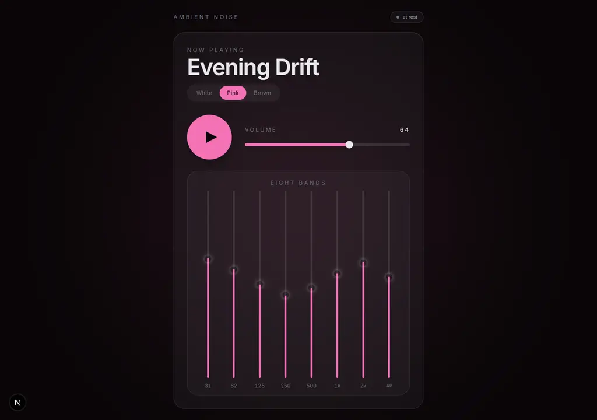
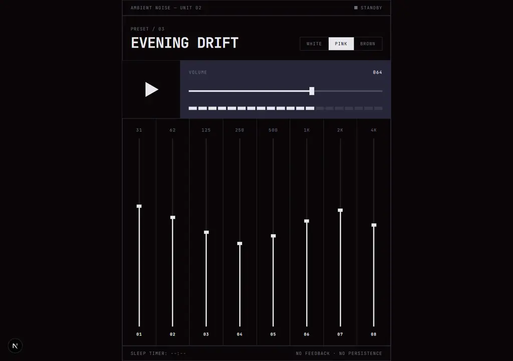
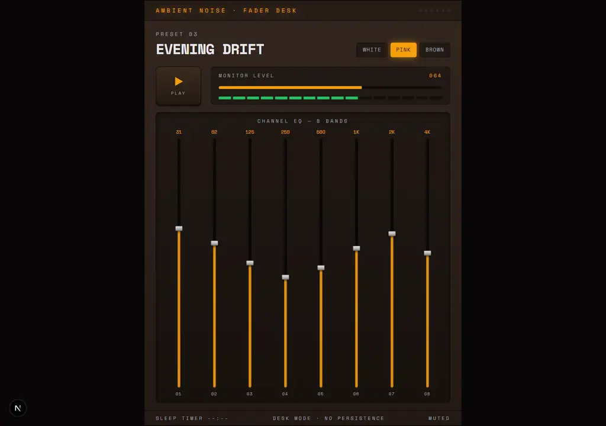
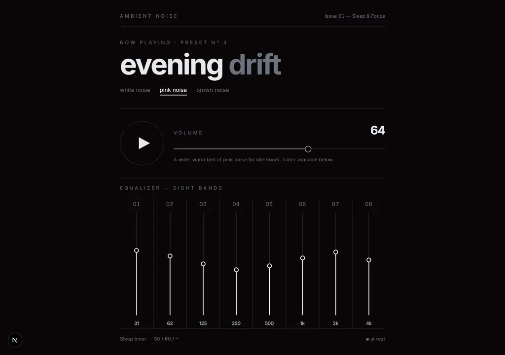
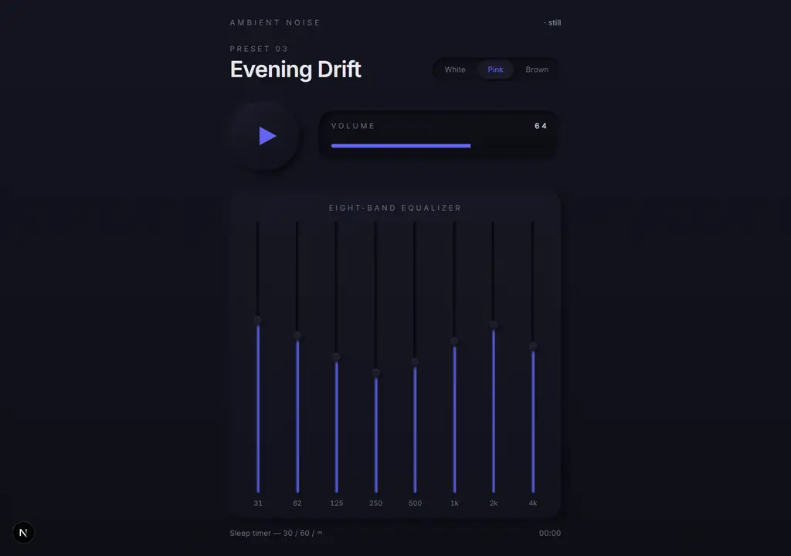
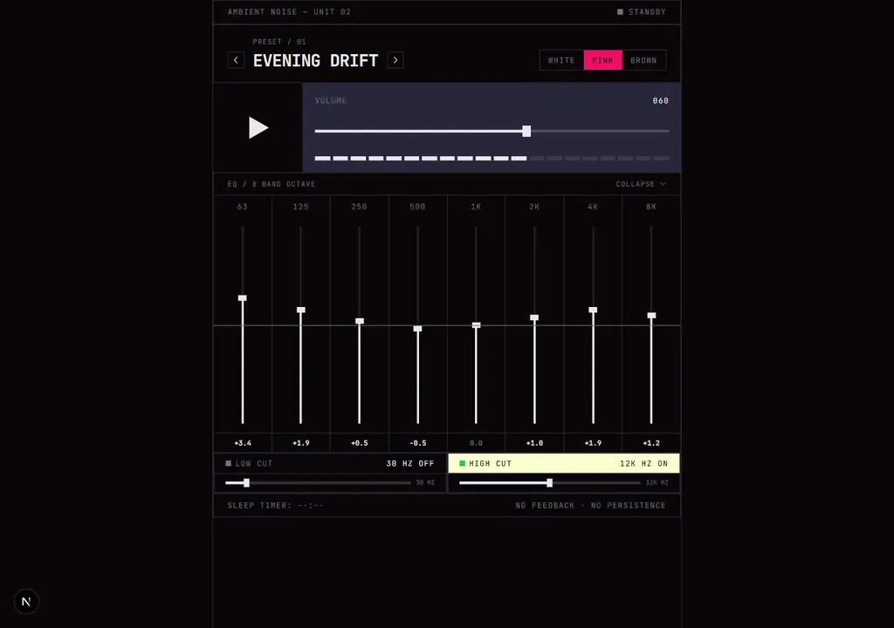
Terminal won: brutalist, minimal, mono grid. Hard 1px rules, zero radius, square controls. The player as an instrument panel. Then the real work: the agent refined it into UNIT-02 across three rounds, adding state and meaning rather than decoration — a STANDBY/RUNNING lamp, live dB with a 0 dB neutral rule, a proper 63 Hz–8 kHz octave band set, retro noise fills — and finally wired the whole surface to the real AudioEngine.
0c2ac23 add 5 minimal dark player UI redesign variants
The five casts land.
a68fd6d refit UI variants to 8-band vertical EQ, viewport-fit
Harmonise the winner around the real control surface.
bfb050b add improved var2 player with preset nav, dB EQ, cut filters
Preset navigation, live dB readouts, low/high-cut filters.
d4ddb88… var2-improved wired to the engine
Polish, then wire the whole surface to the real audio.
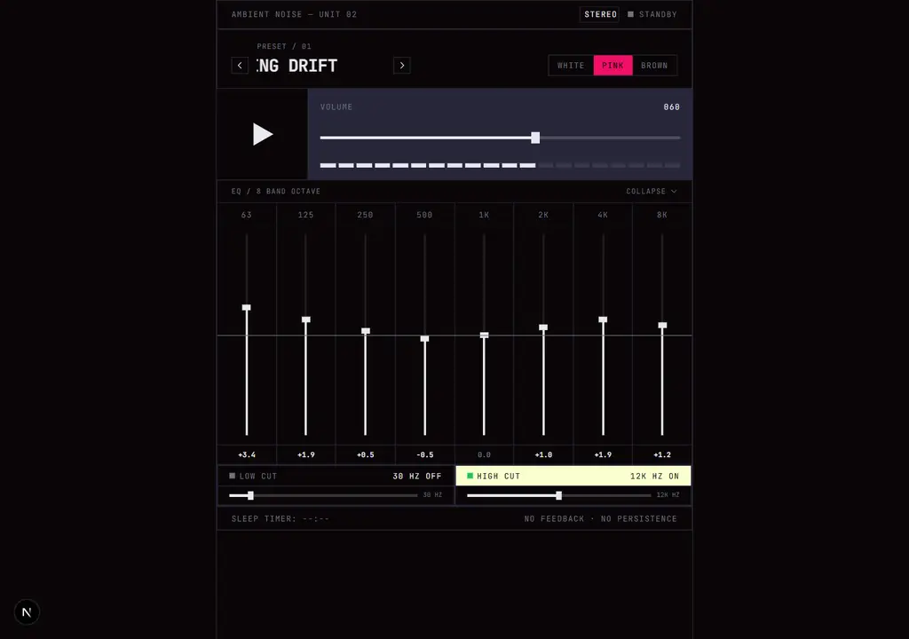
The move that mattered most: make it smaller
The v1 repo was a pnpm monorepo pointed at an Expo/iOS app. The agent did not build that iOS app out. It argued the opposite direction, and I agreed: rip the native path out entirely and ship a flat, web-only PWA. The install story became the browser’s own “save to home screen,” which is real, works offline, and cost nothing to build. Fewer platforms, fewer packages, one surface. v2 is 16 commits from init to where it stands now.
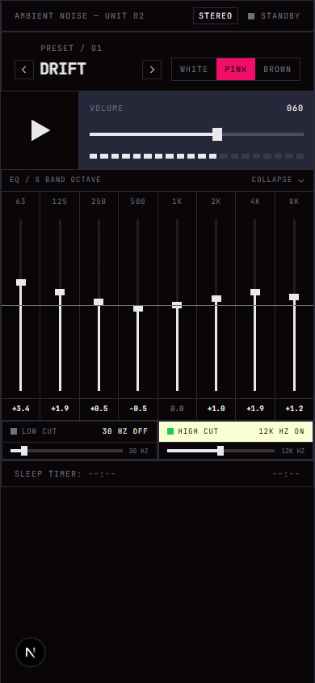
Before
the drifting tape deck- A pnpm monorepo pointed at a native iOS app target.
- Working audio, wandering surface: “ui bump” x 43 commits.
- No stated identity you could hold an implementer to.
After
UNIT-02, web-only- One explicit identity: brutalist mono instrument panel.
- Five real alternatives existed, so the pick is reviewable.
- Flat Next.js PWA, installed via “save to home screen”, offline.
Used, not just shipped
A shipped thing you never touch is a hobby. A simple thing you reach for nightly is a product.
Here is the honest measure. I do not open this app to admire UNIT-02. I open it to sleep. Most nights I pick one preset, set the low-cut so it does not fatigue my ears, and go to bed with it playing. On YouTube, “white noise for sleep” playlists are harsh on the high end or boomy on the low end. Tuning it for real hardware is the difference: earbuds in bed, over-ears with bass when I am working. And because v2 is a PWA that works offline, it rides in my pocket for flights and crying babies.
The control group: spectr, the thing I never used
Right after UNIT-02 shipped, I started “spectr.” It was going to be an ambient sound-design engine, then a full DAW weaving modular eurorack elements with a digital one. It felt like the impressive next thing. It was a scope explosion, and I did not use it once.
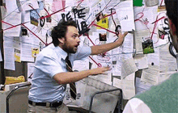
That asymmetry is the whole lesson. UNIT-02 took discipline and taste. spectr took hubris and a git history that looks great on paper. One of them changed how I sleep. The other is a cautionary tale I keep around to check myself.
Note: audio across web, mobile, and desktop is genuinely hard. Even Andrew Kelley, creator of Zig, has said he wrote a whole language partly because existing tools could not do the audio work he wanted. Choosing not to build a native DAW was not timid. It was reading the room.
The lesson
If I started over tomorrow, these are the calls I would keep and the ones I would make sooner.